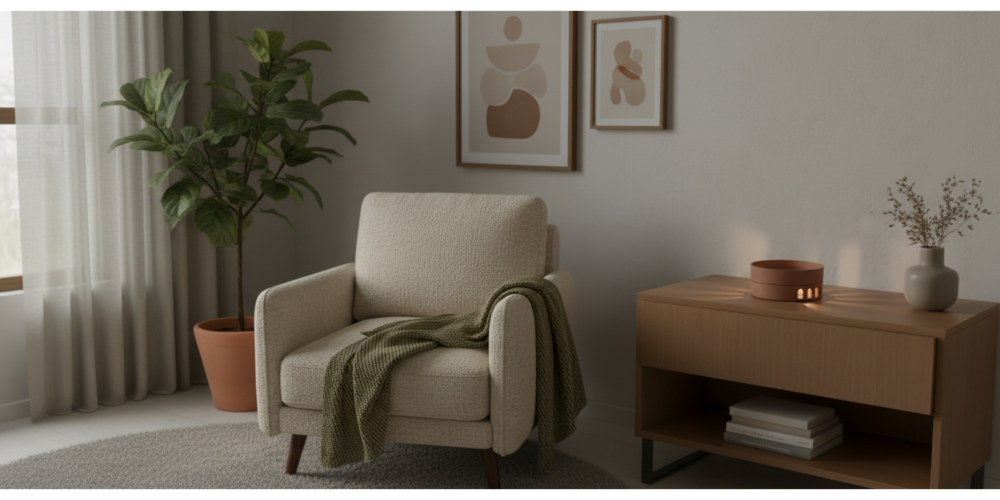
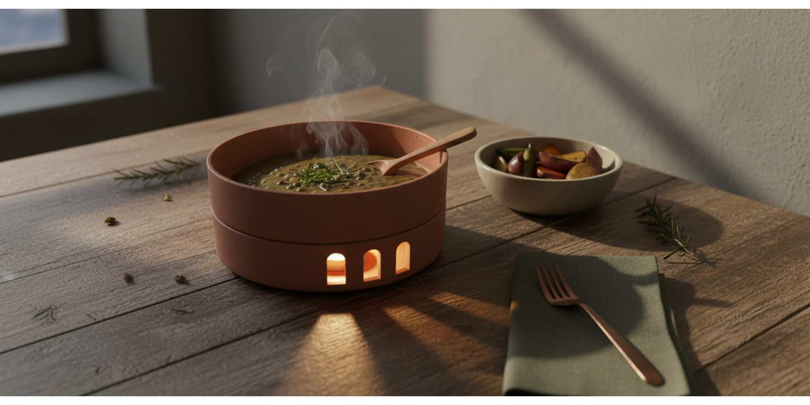
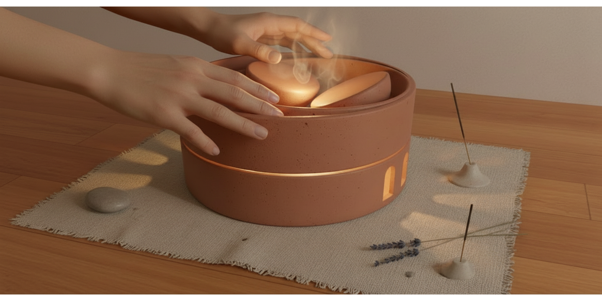
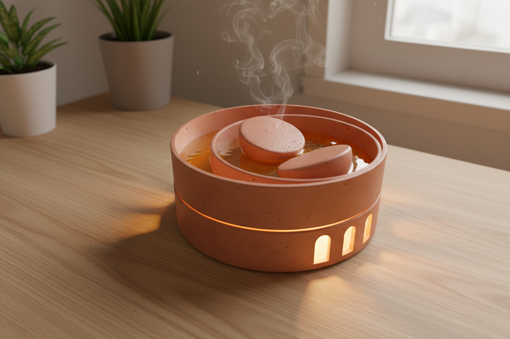
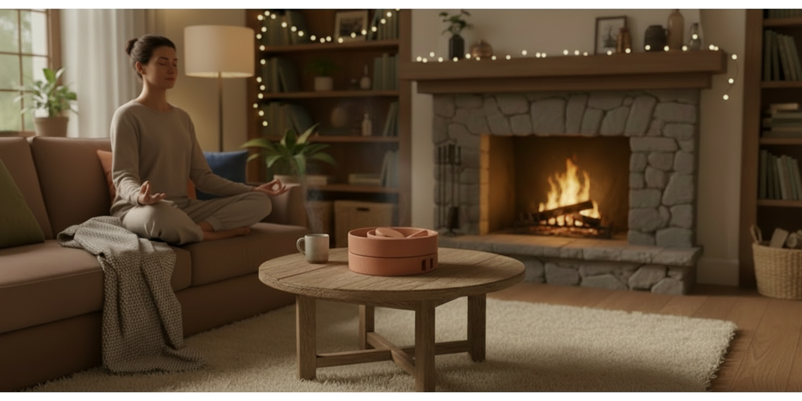
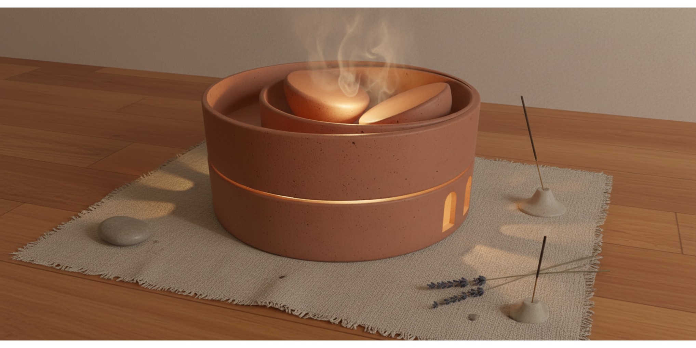

PRODUCT DESIGN
Terracota Mérida
A ceramic object designed to transform everyday actions into conscious rituals, using heat as a medium to promote calm, presence and emotional connection.
Problem
The project addresses increasing levels of anxiety in everyday life, proposing objects that encourage conscious pauses through daily rituals such as eating, meditation and ambient lighting.
Concept
Terracota Mérida is a multifunctional ceramic object that uses heat as a central element to transform ordinary actions into moments of relaxation and presence.
Rather than designing for a single function, the project proposes a system where material, temperature and interaction create a sensory experience that connects body, environment and ritual.
Functions
Meditation
Ceramic plate with heated elements that stimulate body awareness, focus and relaxation.
Food
Passive food warmer that maintains temperature and promotes slower, more conscious eating.
Lighting
Warm ambient light that creates a calm atmosphere and supports transitions between moments of the day.





